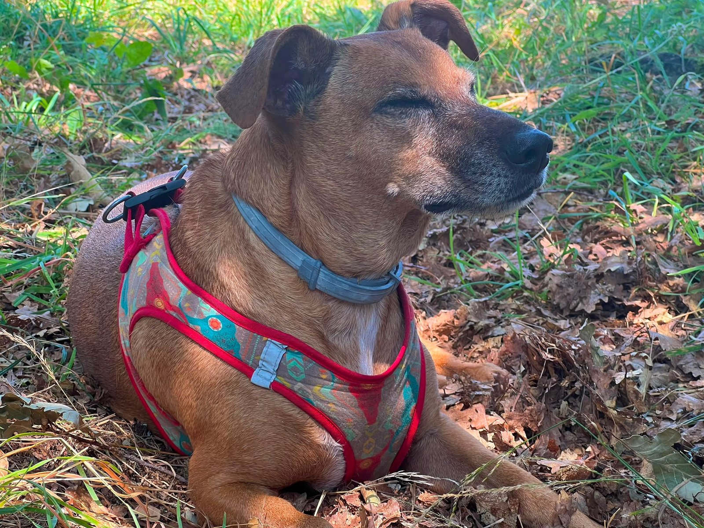

17 de agosto Clásicos de casa
Tortilla
de patatas
Jugosa por dentro y dorada por fuera. Con cebolla, sin pedir perdón.
- Tiempo total: 45 min
- 6 raciones
- Dificultad: Media
- Preparación
- 15 min
- Cocción
- 30 min

Ingredientes
- 800 gPatata
- 6Huevos
- 1Cebolla
- 400 mlAceite de olivaPara freír
- Al gustoSal
Preparación
Pelar y cortar
Pelar y cortar la patata en láminas finas; picar la cebolla.
Confitar despacio
Confitar patata y cebolla en aceite a fuego medio hasta que estén tiernas.
Mezclar y dejar reposar
Escurrir bien y mezclar con el huevo batido y la sal. Reposar diez minutos.
Dar la vuelta
Cuajar en sartén caliente, dar la vuelta con un plato y terminar al gusto.